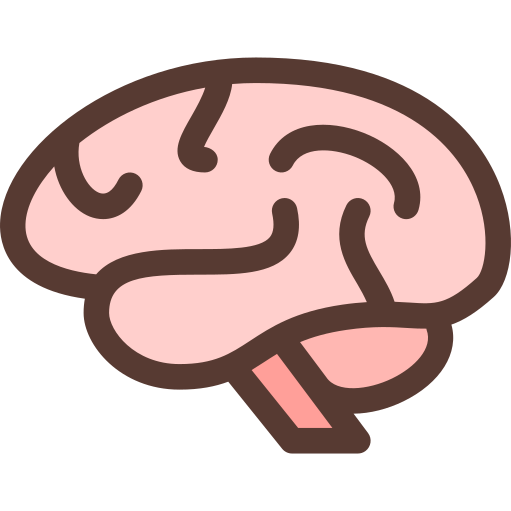

🔧 Publication, Dialogue & Collaboration#
Page Infos:
- ✍️ Vincent Deguin
- 🕑: 20 min
- 🛠️ 05/04/2024
- Finished: ❌
- Reviewed: ❌
Introduction: Je ne sais pas vous, mais moi j’éprouve un besoin viscérale de m’exprimer pour pouvoir naviguer sainement dans un monde en perdition.
To do
- checker semantic tag implementation
Le Besoin#
Son espace digitale avec sa personalité, ses gouts et en utilisant tout son potentiel créatif
Ok trés bien, j’ai mon site web perso (plutot qu’une nuée de réseaux sociaux), il est tout vide, tout blanc qu’est-ce que j’en fait ? Et bien, je trouve la réponse assé magique puisqu’il s’agit de:
Ce que tu veux
La liberté totale, une denrée plutot râre dans le monde actuel.
Dans ce gigantesque écocystem sauvage qu’est Internet, cette forêt de contenue, vous pourrez germer, vous épanouir, pour enfin devenir partie integrante de l’écocystem globale à votre manière.
Une fois que vous aurez créé votre site internet (espace personnel digitale), vous pourrez le modifier a votre guise en utilsante toute la pelette du developpeur web, a savoir le CSS.
- svg
- Les outils de la science a votre propre fin.
- Python
- etc

La méthode
Note
Insérer liens vers jb-tools ou chaque outil est mentionné en détail
Tools to interact with the content of the page
Note


Note
Liens vers ankre de la page ou les différentes sections sont abordés
Peer-Review 
Every word I am writing is to be reviewed, questionned, challenged … Help yourself with all the aformentionned tools and if you are not sure about how to use it, check the following page:
- Help/Tools
Colaborate 
I would like to welcome as many contributions as possible from a wide variety of researchers to explain the basics of their disciplines (in a completely free and creative fashion).
Discuss 
Process the data using my online tools …
Open Dialogue 😁
Note
Explorer ce site: constructivedialogue
Bien plus efficace qu'un papier et un stylo n'est-ce pas (Hopefully)
Pour qui?
Note
grid pour présenter les différents champs d’application
Bien sur, cette methodde est particulièrement indiqué dans les domaine de la science
Résultat#
Intéractivité#
» Collaboration
- What do I look for
- How can we make it work
- link with interaction workflow
- How can people be acknowledge properly for their work.
- …
- Ross - Cosmochemistry
- Zak - Observational Astronomy (JWST)
- Hugh - Python, Machine Learning
- Pierre - Modelling
- Astra - Physics education
- Alessio - Semantic Web
- Giulia - Observation Astronomy
Les Histoires
My Scientific Journey
Introduction:
Note
Insérer différents types de pages pour expliquer mon experience scientifique dans un enchainement smooth.
- Mettre en place les différents “plans” de l’histoire …
- Créer les pages (exemple Blog) …
- Créer un card effect stylé et transférer le vieux sur pages a réviser, a implémenter …
Stairway to Heaven
Experimenting with the earliest stages of planet formation (Part 2)
Job Type: PhD
Lead supervisor: Anita Dawes
Discipline: Astrochemistry
Duration: 4.5 years
Status:
 →
→

👀 → 
Museum of non result
Experimenting with the earliest stages of planet formation (Part 1)
Job Type: PhD
Lead supervisor: Helen Fraser
Discipline: Astrophysics / Engeneering / Material Sciences
Duration: 4.5 years
Status:
→

{kind=link}
{kind=link}
👀 → 
First steps
Photochemistry of Fe:H2O adducts in argon matrixes: a combined experimental and theoretical study in the mid-ir and uv-visible regions
Job Type: Internship
Lead supervisor: Jennifer Noble
Discipline: Astrochemistry
Duration: 2 month
Status: Finished (✅)
 -
-